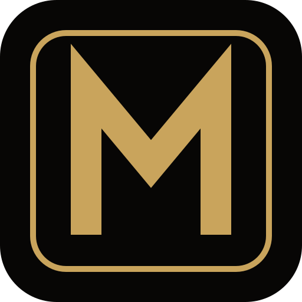
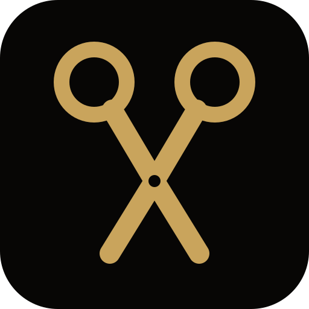
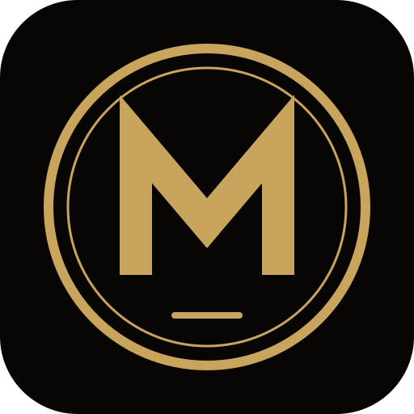
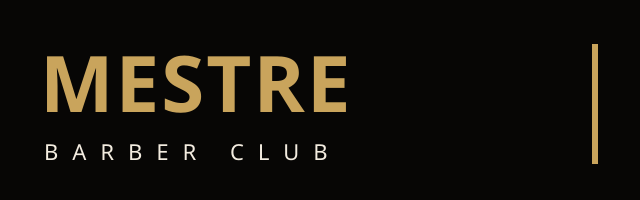

Um M forte dentro de uma moldura quadrada, como uma placa de barbearia.

Os anéis e as lâminas de uma tesoura aberta formam o M de Mestre.

M dentro de um selo redondo de traço duplo, clima de clube tradicional.

MESTRE em letra larga dourada com BARBER CLUB espaçado e a barra vertical que o site já usa.